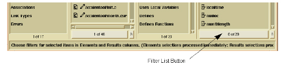
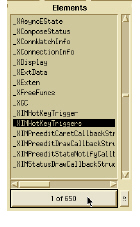
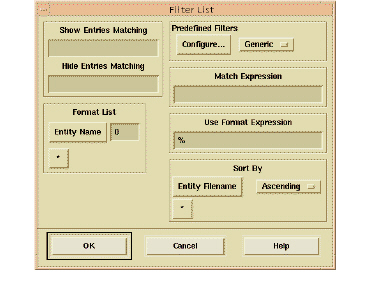

Filtering Lists
Queries with long result lists can be difficult to analyze. For this reason, DIScover provides you with the ability to filter your query results to display subsets of information. List filters make it easier to examine these lists, by limiting the number of items that appear. List filtering does not delete items permanently from lists, but hides them temporarily, enabling you to focus on subsets that have related properties.
List filtering uses pattern-matching algorithms and entity characteristics that you can customize using the Filter List dialog box. List filters are available in the following windows:
• Browser (in the Elements and Results columns)
• Viewer (in the Minibrowser lists of instances and group contents)
• Anywhere a Filter List button is available, as in the following example from the Browser:

The following example illustrates how you click the 0 of 650 bar at the bottom of the Elements pane in order to invoke the Filter List dialog box. You can then choose to display a subset of the 650 available methods in the selected directory, perhaps only those methods containing a specific character string.

The Filter List dialog box contains multiple sections that allow you to apply different types of filters, depending on your objectives. The following sections cover basic and advanced filtering.

Show/Hide Entries Matching
This section enables you to include or exclude items containing text strings that match the strings you enter in the corresponding text fields. These fields are case-sensitive, and accept wildcard and regular expression characters such as *, ^, and [ ]. Consider the following example:
Show Entries Matching: *day[^_]*
Hide Entries Matching: *[0-9]*day*
The resulting list displays every item containing the string day, except those followed by an underscore. It hides every item containing the string day when it is preceded by any string ending in a numeral.
Format List
This section allows you to determine the type of information that appears with each item in the filtered list. By default, a single characteristic—Entity Name—appears for each item in the list.
For information on setting filter characteristics, see Multiple Filter Characteristics.
Sort By
This section enables you to specify the order of appearance of each item in the resulting list. By default, DIScover sorts filtered lists in ascending order by entity name.
For information on sorting filtered lists, see, Adjusting the Output of a Filtered List.